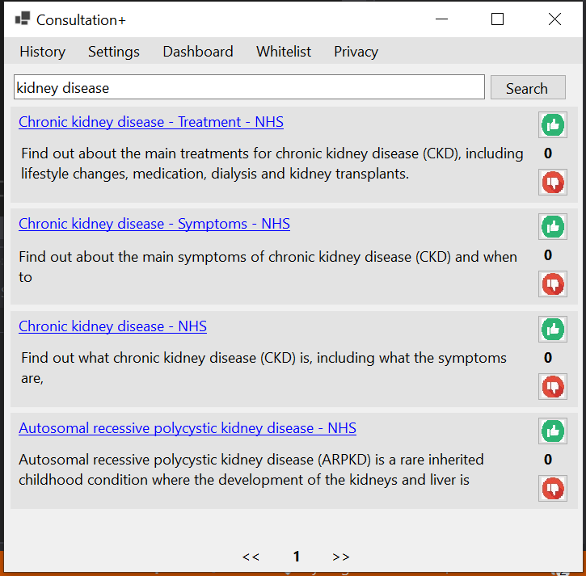

Consultation+
03/2021
Link to repository
As part of my Systems Engineering module in Year 2, I was assigned to a group of 3 and tasked to build an application for the Royal College of General Practitioners, RCGP, and the National Health Service, NHS.
We chose to build a highly customisable search engine targeted at old Window’s machines because GPs generally have low specification computers; however, they have blazingly fast internet speeds. To allow our application to run seamlessly on old computers, we used the C# and the .NET framework since they are both built to work with Windows and made sure that our application had low RAM usage; in fact, our application only requires up to 60 MB to run.
Image 1: High level view of the system architecture.
Additionally, we realised that we could analyse the search query data generated to provide insights in an interactive web dashboard. By clicking on an interactive map of the UK, GPs can filter the data to view insights that is geographically relevant to them. Consultation+ is fully GDPR compliant, and users can opt-out of sharing data with us if they want to.
Image 2: Home screen of desktop search engine.
Image 3: Displaying search results for kidney disease
By leveraging Microsoft Graphs, we were able to incorporate single sign-on, SSO, and store user data to their OneDrive. As a consequence of using Graphs for login, we did not have to worry about storing passwords and other sensitive information securely. Furthermore, Consultation+ stores users search history and settings to their OneDrive. We made sure to restrict Consultation+ settings so that it cannot read or write to other folders in the user’s OneDrive.
Another API that was used is Google’s Custom Search API. The main advantage of this API is that it lets users perform searching using a customisable search engine. More tech-savvy users can create their search engine and link Consultation+ to it using developer mode. As a result, our application can be tailored to meet the specific needs of various specialists, e.g., a dermatologist can create a custom search engine that searches dermatology websites.
Image 4: Screenshot of interactive web dashboard
To further refine search results, we added a recommendation feature. Users can upvote or downvote articles that they found helpful or unhelpful. Highly upvoted articles are displayed more prominently to users. This feature is optional, so users can disable it if needed.
Consultation+ uses HTTP and AJAX requests to communicate with the backend and dashboard. Our backend is built in Python; specifically, our databases that store users’ emails and search data use the Django framework.
While trying to generate insights, our group came across a problem. A lot of GPs use different terms for the same disease when searching, e.g., one GP might search ckd while another might type chronic kidney disease. To address this issue, we integrated a clustering algorithm in the backend to help group similar search terms together. Every week, our model is further trained using the search data from that week.
Finally, we have provided unit and integration tests for the desktop application and the Django backend.